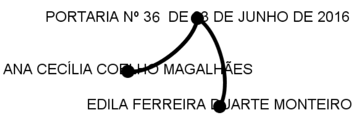

Formal Information Flows Among Top Authorities of the Brazilian Federal Government based on Co-word Analysis of Data Published in the Official Gazette
Rafael Henrique Santos Soares
Jorge H. C. Fernandes
Ricardo B. Sampaio
Rafael Henrique Santos Soares
✓ Pesquisador na UnB
✓ Mestre em Ciência da Informação (UnB)
✓ Bacharel em Administração (Ufmg)
✓ Bacharel em Sistemas de Informação (PUC-MG)
✓ Coordenador da Subdivisão de Integração e Reusabilidade do Banco Central do Brasil
✓ Professor no UniCEUB
Grupo de Pesquisas sobre Inteligência Cooperativa em Redes Sociais Complexas - UnB/Capes
dgp.cnpq.br/dgp/espelhogrupo/2334079961242970- entre outros...
- Analise de vulnerabilidades baseada em informações do portal da transparência;
- Mapeamento de afinidades politicas com base em análise do discurso;
- Estudo de interações sociais em ambientes virtuais de aprendizagemç
- Identificação de redes sociais por meio de processamento de texto
- text to net
- whatzapp text to net
www.text2.net
-
Whatsapp text to net
- Network structure
- Most proeminent members
- Word cloud
Export your whatsapp group chat to zap@text2.net and discover:


Formal Information Flows Among Top Authorities of the Brazilian Federal Government based on Co-word Analysis of Data Published in the Official Gazette
Rafael Henrique Santos Soares
Jorge H. C. Fernandes
Ricardo B. Sampaio
Modelo de comunicação da informação entre organizações e agentes públicos.
Conceito de comunicação formal e informal de Le Coadic (2004, p.35), ideia de transição gradual de informal a formal proposta por Costa (2013) e o Modelo espiral de Dance(1967)...

Modelo de comunicação da informação entre organizações e agentes públicos.
Data collection
no art. 1º da Lei nº 10887/04, à vista das informações constantes no Processo INCRA/Nº 54700.000339/2016-13.
MARCO AURELIO BEZERRA DA ROCHA
SUPERINTENDÊNCIA REGIONAL NO PARÁ
PORTARIA Nº 35, DE 23 DE JUNHO DE 2016
A SUPERINTENDENTE REGIONAL SUBSTITUTA
DO INSTITUTO NACIONAL DE COLONIZAÇÃO E REFORMA
AGRÁRIA - INCRA, NO ESTADO DO PARÁ, no uso das
atribuições que lhe são conferidas pela Portaria/INCRA/P/Nº 649, de
08 de agosto de 2000, publicada no Diário Oficial da União do dia
seguinte, resolve:
Cancelar a Pensão Temporária de MARCIA LUÍZA FERNANDES
BENTES, matrícula SIAPE nº 01527274, filha do instituidor
de pensão LUIZ DE SOUZA BENTES, ex-ocupante do cargo de Agente
de Atividades Agropecuárias, Classe "S", Padrão III, matrícula SIAPE
n.º 1050815, em virtude da perda do motivo que assegurou a concessão
do benefício, ou seja, a condição de filha maior solteira sem
cargo permanente, à vista das informações constantes do Processo Administrativo INCRA / SR (01) / n.º54100.000070/2016-34.
EDILA FERREIRA DUARTE MONTEIRO
PORTARIA Nº 36, DE 27 DE JUNHO DE 2016
A SUPERINTENDENTE REGIONAL SUBSTITUTA, DO INSTITUTO NACIONAL DE COLONIZAÇÃO E REFORMA AGRÁRIA - INCRA, NO ESTADO DO PARÁ, no uso da competência delegada pela Portaria INCRA/P/Nº 686, de 06 de agosto de 2002, publicada no Diário Oficial do dia 07 seguinte, resolve: Designar ANA CECÍLIA COELHO MAGALHÃES, ocupante do efetivo de Fiscal de Cadastro e Tributação Rural, matrícula SIAPE nº 1033540, para, no período de 27 de junho a 06 de julho de 2016, exercer os encargos de Substituta da Chefe de Serviço, código DAS-101.1, do Serviço de Cadastro Rural, da Divisão de Ordenamento da Estrutura Fundiária, da Superintendência Regional do Pará - SR01, do Quadro de Pessoal deste Instituto.
EDILA FERREIRA DUARTE MONTEIRO
-
Encontrar o início de cada portaria
(Palavra chave seguida de numero seguido de data) -
Encontrar nomes próprios no corpo da portaria
(Palavra-chave precedida e seguida de até 4 palavras com maiúscula) -
Construir uma rede de 2 modos
(Nomes = atores, Portaria = evento)
cargo permanente, à vista das informações constantes do Processo Administrativo INCRA / SR (01) / n.º54100.000070/2016-34.
EDILA FERREIRA DUARTE MONTEIRO
PORTARIA Nº 36, DE 27 DE JUNHO DE 2016
A SUPERINTENDENTE REGIONAL SUBSTITUTA,
DO INSTITUTO NACIONAL DE COLONIZAÇÃO E REFORMA
AGRÁRIA - INCRA, NO ESTADO DO PARÁ, no uso da
competência delegada pela Portaria INCRA/P/Nº 686, de 06 de agosto
de 2002, publicada no Diário Oficial do dia 07 seguinte, resolve:
Designar
ANA CECÍLIA COELHO MAGALHÃES , ocupante
do efetivo de Fiscal de Cadastro e Tributação Rural, matrícula
SIAPE nº 1033540, para, no período de 27 de junho a 06 de julho de
2016, exercer os encargos de Substituta da Chefe de Serviço, código
DAS-101.1, do Serviço de Cadastro Rural, da Divisão de Ordenamento
da Estrutura Fundiária, da Superintendência Regional do
Pará - SR01, do Quadro de Pessoal deste Instituto.
EDILA FERREIRA DUARTE MONTEIRO
SUPERINTENDÊNCIA REGIONAL NA PARAÍBA
PORTARIA Nº 9, DE 27 DE JUNHO 2016
-
Repetir os passos 1, 2, e 3 para todas as portarias

-
Mesclar as sub-redes

-
Finalmente, gerar a rede de um modo a partir da de dois modos
Rede de ego
A partr da rede original, extrair a sub-rede 2-neighborhood.
Métricas e análises
Clique: uma sub-rede completa. (Mantega, Belchior, Raupp, Pimentel and Rousseff)
Restrição diática: Mede a oportunidade de um ator mediar a comunicação entre outros atores da rede. Quanto menor mais influente o ator é na rede.
Densidade egocentrica: Densidade da rede formada pelos atores diretamente ligados ao ego, sem considerá-lo.
| Rede | Restrição diática agregada | Densidade egocêntrica |
|---|---|---|
| Clique | 0.2889 | 0.1484 |
| Sem-clique | 0.1501 | 0.0416 |
Pequena perturbação na rede levou a grande mudança no indice -> A restrição sobre Dilma é pequena (muito centralizadora?)
The removal of only four agents of the network dropped the aggregated restriction in 50% and the egocentric density in almost 70%. Such sensitivity in these metrics show that the values are small, because a very small change in the number of actors made a big change in the metrics. If these values were big, small perturbations in the network wouldn`t lead to big impact on these metrics.
These calculations and comparisons of aggregated restriction and egocentric density allow us to believe that the communication of information between agents of public Administration in Brazil are strongly centered on President Rousseff, what may point out to difficulties implement direct articulation between these agents. A hypothesis raises then: An increment on the communication between the agents who deal directly with the President would lead to a situation where the information would flow more smoothly, fast, with less noise, and the President would have more resources to deal with other issues.
Proximidade estrutural e orçamento
Proximidade estrutural: Peso da ligação entre o ator e a Presidenta Rousseff.
Orçamento: Montante destinado ao ministério ou órgão dirigido pelo ator.
Correlação entre as grandezas: 0,6012 (Estatisticamente significativa)
Por fim...
✓ Dados apontam para uma grande centralização das comunicações na Presidência
✓ Dados apontam que quanto mais proximo da Presidenta maior o orçamento alocado sob responsabilidade do ator.
Trabahos futuros
✓ Validação usando agenda oficial
✓ Efeitos de eventos políticos relevantes na estrutura da rede'
✓ Comparação entre a relevancia estrutural e desempenho nas eleições
Obrigado!
Vamos conversar?!
Rafael Henrique Santos Soares
rafaelhss@gmail.com
www.rafaelhenrique.net